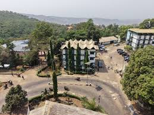
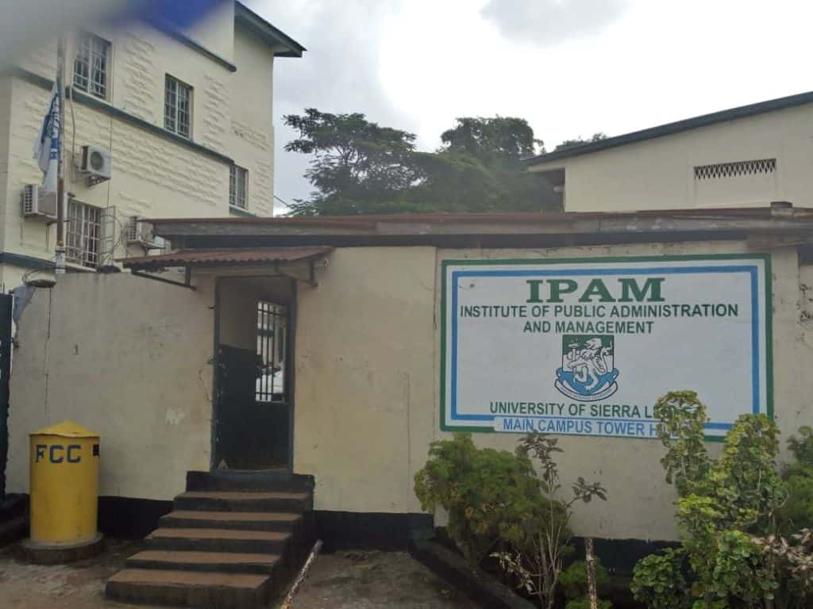
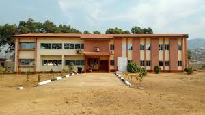

explore universities,departments,courses and career Opportunities

Fourah Bay College is one of the oldest higher education institutions in West Africa and a constituent college of the University of Sierra Leone.

IPAM is a constituent college of the University of Sierra Leone located in Freetown. The institution focuses on business, management and finance.

COMAHS is a medical institution under the University of Sierra Leone that trains healthcare professionals in Sierra Leone.